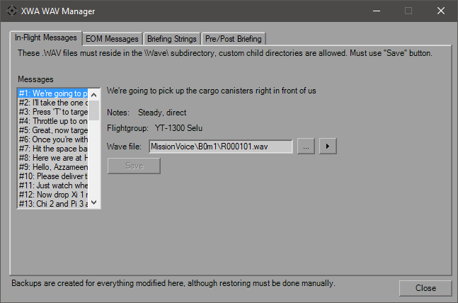

Wave Manager

The Wave Manager dialog allows you to customize all of the voice files used for the mission. All overwritten files are duplicated in their current location with a ".bak" extension to prevent loss of the originals. To restore them, you must manually remove the files you've created and then remove the added extension from the originals. Throughout the dialog, to stop audio playback simply select another message. Audio will continue playing when changing tabs, but selecting a message on another tab will also stop playback.
The first tab is for the traditional in-flight messages. The message text, performance notes and source Flightgroup are shown when selected, as well as the current WAV file. If the defined WAV file currently does not exist, the "Play" button will not be visible.
Use the "..." button to choose/replace the WAV file for the currently selected message. File must be located somewhere within the "Wave" subdirectory of XWA's installed location. You must hit the "Save" button prior to closing the dialog to retain changes. Switching tabs will not lose your work.
The End of Mission messages follow the same restrictions as the In-Flight Messages. There is a single performance note shared between the pairs of messages, but is otherwise the same.
The Briefing strings are different, in that there is a fixed naming convention used. You may select any WAV file on your computer, it will be copied to the appropriate location shown in the text box. Again, if the WAV file does not exist, the "Play" button will not be visible. For custom missions, this is an easy check to see if your briefing messages will wind up playing unrelated audio. There is no "Save" button due to the fixed nature and copying in the file, so any selection made and required backups are executed immediately.
The Pre/Post covers the rest of the mission-specific audio and follows the same fixed naming convention and selection rules as the briefing. The "Pre-mission Banter" is usually Emkay as he's turning around to start the projector ("Great news! Your dad..."), or the quick "Listen up, pilots!" on the MonCal cruiser. There's no visible text for it, so that is audio only.
The "Mission Description" is for the pre-briefing audio. For stock missions, the text before the "#" is the true description, and what follows that is the audio. Typically it's one WAV file per paragraph.
The "Debrief" message is for post-mission, and the text is just the audio transcript. For both of these sections, multiple performance notes can be denoted by "#" separators to distinguish between paragraphs instead of an overall note..
I have not explored if there is an upper limit as to the number of WAV files that can be created here, but the numbering scheme at least implies that you shouldn't go over 100, although that's a bit much for a briefing, anyway. If you've accidentally loaded files in the wrong order, use the "Up" and "Dn" buttons to re-order as needed when you're bringing files in. Since everything's a fixed name, when using those buttons it'll follow your current selection.